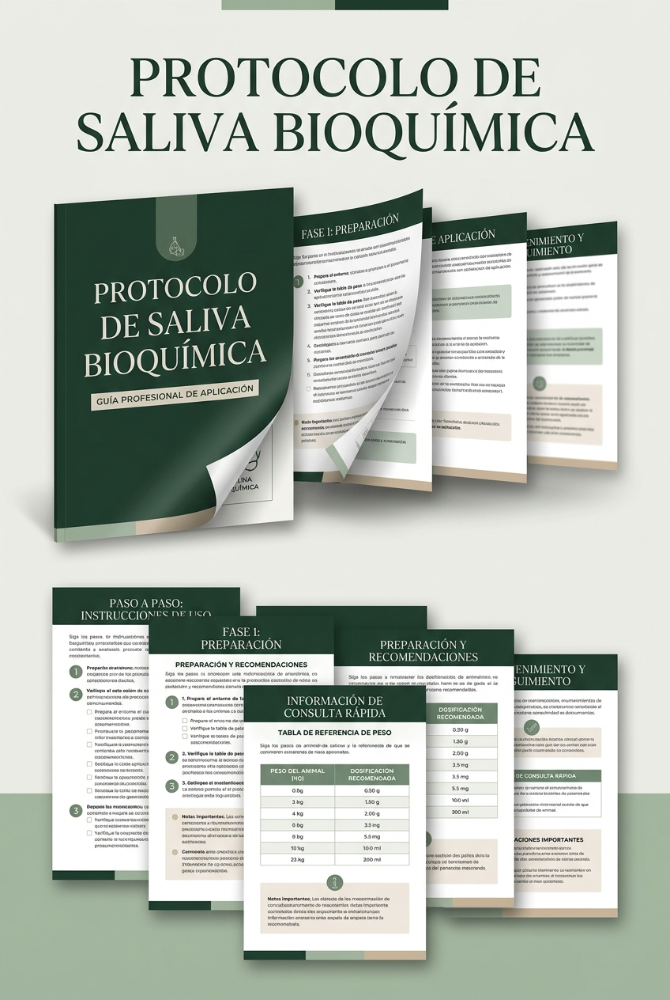

Puede llegar hasta el corazón
La bacteria de una encía inflamada no se queda ahí. Puede entrar al torrente sanguíneo y alojarse en las válvulas del corazón.
Esa bacteria vive en la encía inflamada de tu perro y puede viajar hasta su corazón, riñones e hígado. Aprende a neutralizarla en 10 segundos al día, con un ingrediente natural que ya tienes en casa — sin anestesia y sin gastar una fortuna en la clínica veterinaria.
La bacteria de una encía inflamada no se queda ahí. Puede entrar al torrente sanguíneo y alojarse en las válvulas del corazón.
Son los órganos encargados de filtrar esa bacteria de la sangre — y con el tiempo, ese trabajo extra les pasa factura.
Lo que ves en los dientes no es la causa del riesgo. La causa real sigue creciendo, en silencio, debajo de la encía.
La limpieza dental en clínica casi siempre requiere anestesia general. Y la anestesia general conlleva riesgos reales — especialmente en perros mayores, de razas pequeñas o de cara corta (braquicefálicas), como el bulldog o el pug.
El resultado: muchos dueños postergan la limpieza por miedo, o la evitan por el costo. Mientras tanto, la bacteria sigue ahí, trabajando en silencio.
No tienes que elegir entre esas tres opciones. Existe un camino intermedio: reducir el riesgo bacteriano todos los días, en casa, sin anestesia y sin gastar en la clínica cada mes.

La pieza que casi nadie te explica
Cuando la encía está inflamada, se abre como una puerta. Los vasos sanguíneos quedan expuestos, y ahí es exactamente donde la bacteria pasa de la boca al resto del cuerpo.
Por eso el protocolo no se enfoca en «raspar» el sarro que ya ves — se enfoca en neutralizar la bacteria en su origen, en la encía, antes de que encuentre esa puerta abierta.
El ingrediente, aplicada en la forma y proporción correctas, ayuda a reducir esa bacteria. La proporción exacta, el modo de preparación y la tabla de dosificación según el peso de tu perro están dentro del protocolo completo.
Respaldo
Un estudio académico realizado en Guatemala evaluó el efecto de el ingrediente sobre la bacteria presente en la encía, en un grupo de 30 perros.
Con la concentración más alta evaluada (20%), se registró una reducción de bacteria de hasta el 84.8%.
Cada peso tiene su proporción exacta — la tabla completa está dentro del protocolo.
Sigues la receta paso a paso del protocolo, con ingredientes que ya tienes en casa.
10 segundos. Sin cepillado, sin pelea con tu mascota.
La frecuencia recomendada está detallada paso a paso dentro del protocolo.
Fácil de conseguir, sin pedidos especiales ni productos raros.
Lo aplicas tú mismo en casa, sin exponer a tu perro a riesgos innecesarios.
Cabe en cualquier rutina, sin pelear con tu mascota.
No es una idea suelta — hay datos reales detrás.
Reduces la frecuencia con la que necesitas una limpieza profesional.
Un efecto adicional que notarás desde las primeras semanas.
Todo lo que necesitas para empezar hoy mismo: la proporción exacta, el modo de preparación y la tabla de dosificación según el peso de tu perro.
Garantía de satisfacción de 7 días o devolución de tu dinero
No. Si tu perro ya tiene sarro avanzado o mucha acumulación, este protocolo no reemplaza esa limpieza profesional. Lo que sí hace es reducir la bacteria y la inflamación de la encía, ayudándote a espaciar la necesidad de esa limpieza y a bajar el riesgo mientras tanto.
El protocolo incluye una tabla de dosificación según el peso, pensada para adaptarse a perros de distintos tamaños. Si tu perro tiene alguna condición de salud particular, consúltalo primero con tu veterinario de confianza.
Varía según cada perro y el estado inicial de su encía. El protocolo detalla la frecuencia de aplicación recomendada para acompañar el proceso.
No. Solo un envase con spray y el ingrediente que se detalla en el protocolo — algo que normalmente ya tienes en casa.
La aplicación toma unos 10 segundos y no requiere cepillado. El protocolo incluye recomendaciones para que sea lo más tranquila posible para tu mascota.
Es un archivo digital (PDF) al que accedes de inmediato después de completar tu compra, para que puedas empezar el mismo día.